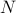
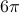

Dynamical approach to area law for lattice Yang–Mills. (with Ron Nissim and Scott Sheffield)
To appear in Proc. Amer. Math. Soc.
Surface sums in two-dimensional large-
lattice Yang–Mills: Cancellations and explicit computation for general loops. (with Jacopo Borga and Jasper Shogren-Knaak)
Expanded regimes of area law for lattice Yang-Mills theories. (with Ron Nissim and Scott Sheffield)
Surface sums for lattice Yang–Mills in the large- limit. (with Jacopo Borga and Jasper Shogren-Knaak)
Global well-posedness of the dynamical sine-Gordon model up to 
. (with Bjoern Bringmann)
To appear in Ann. Probab.
Fractional Gaussian forms and gauge theory: an overview. (with Scott Sheffield)
Front. Math. 21, 1-137, 2026.
Global well-posedness of the stochastic Abelian-Higgs equations in two dimensions. (with Bjoern Bringmann)
Random surfaces and lattice Yang-Mills. (with Minjae Park and Scott Sheffield)
Comm. Amer. Math. Soc. 5, 774-896, 2025.
A para-controlled approach to the stochastic Yang-Mills equation in two dimensions. (with Bjoern Bringmann)
To appear in Mem. Amer. Math. Soc.
Correlation decay for finite lattice gauge theories at weak coupling. (with Arka Adhikari)
Ann. Probab. 53 no. 1, 140-174, 2025.
A state space for 3D Euclidean Yang-Mills theories. (with Sourav Chatterjee)
Comm. Math. Phys. 405 no. 3, 2024.
The Yang-Mills heat flow with random distributional initial data. (with Sourav Chatterjee)
Comm. Partial Diff. Eq. 48 no. 2, 209-251, 2023.
Correlations with tailored extremal properties. (with Peter J. Bickel)
Wilson loop expectations in lattice gauge theories with finite gauge groups.
Comm. Math. Phys., 380, 1439-1505, 2020.
Central limit theorems for combinatorial optimization problems on sparse Erdős-Rényi graphs.
Ann. Appl. Probab., 31 no. 4, 1687-1723, 2021.